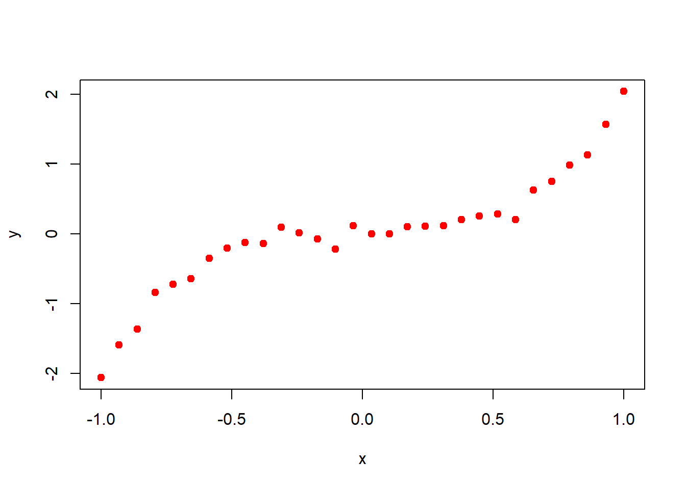
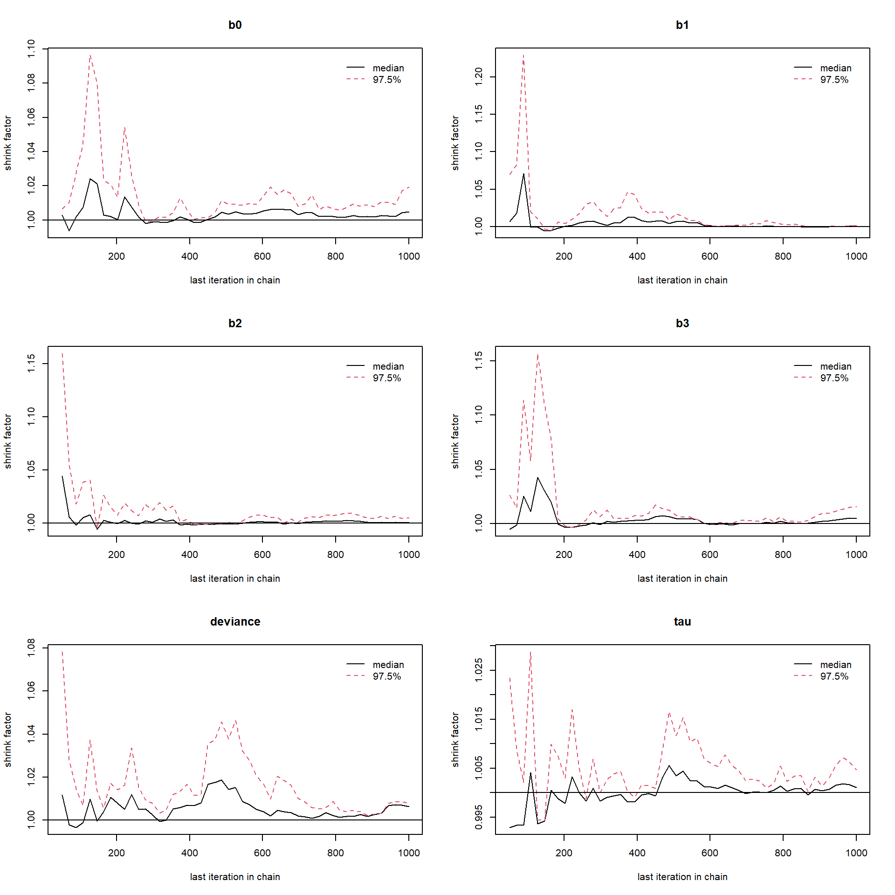
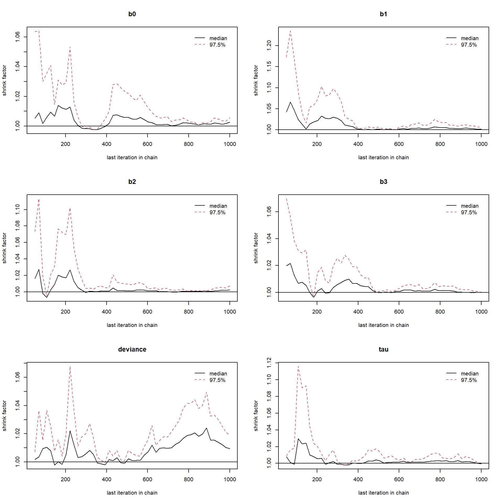
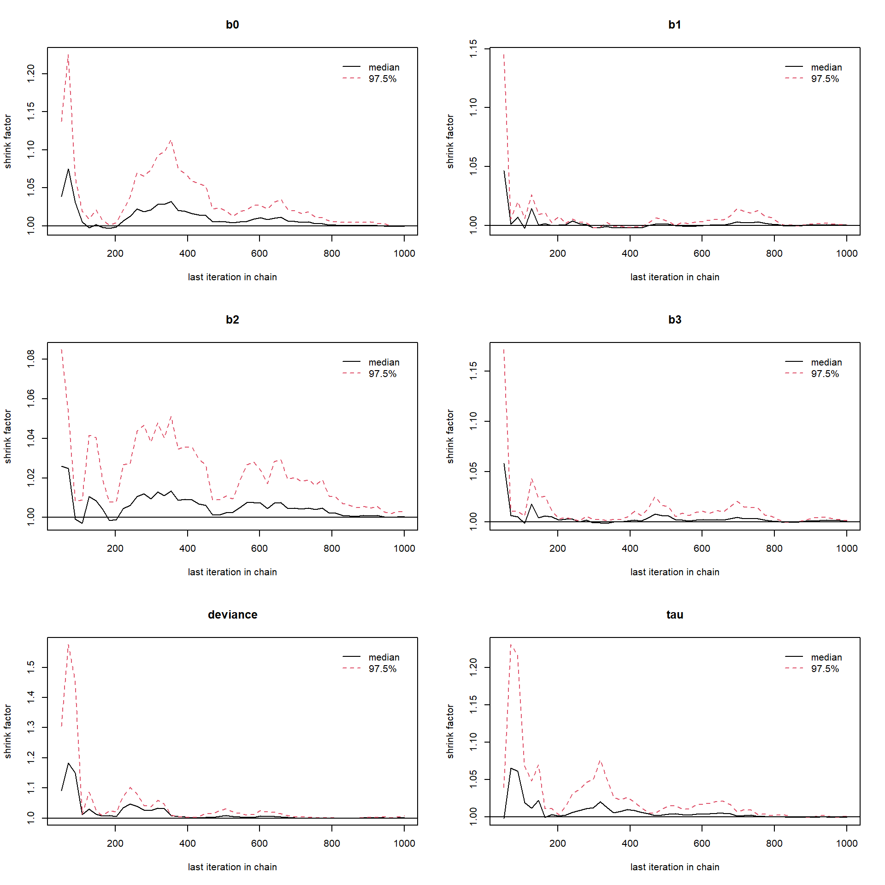
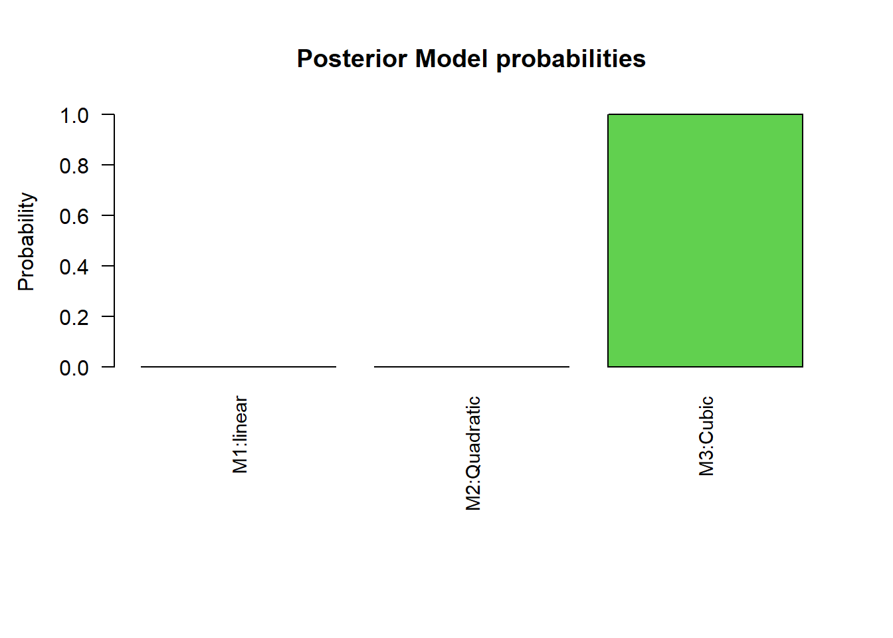
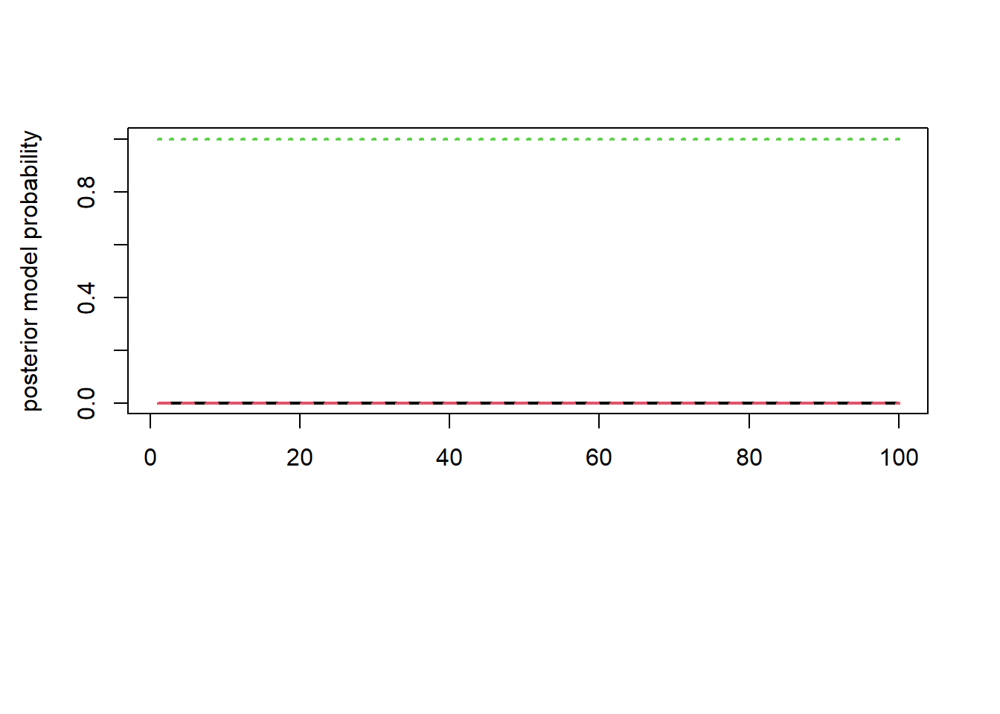

Suppose we have data and want to do further analysis like inference and prediction using this data. First we will look for the mathematical model which will fit best for this data. If we believe that data is from any \(M_1\), \(M_2,\cdots,~M_k\) models, then the problem boils down to model selection. For model selection, many statistical and machine learning techniques are present in literature. Here we shall discuss the Reversible Jump Markov Chain Monte Carlo(RJMCMC) under the Bayesian framework and implement it in \(\texttt{R}\) step-by-step for one simple example.
Reversible Jump Markov Chain Monte Carlo(RJMCMC)
Demonstration using example in \(\texttt{R}\):
First we installed the needed packages and then simulate the data for understanding RJMCMC algorithm.
library(R2jags)
Warning: package 'R2jags' was built under R version 4.4.2
Loading required package: rjags
Warning: package 'rjags' was built under R version 4.4.2
Loading required package: coda
Warning: package 'coda' was built under R version 4.4.2
Linked to JAGS 4.3.1
Loaded modules: basemod,bugs
Attaching package: 'R2jags'
The following object is masked from 'package:coda':
traceplot
library(rjmcmc)
Warning: package 'rjmcmc' was built under R version 4.4.2
Loading required package: madness
Warning: package 'madness' was built under R version 4.4.2
library(madness)set.seed(1)x =seq(-1, 1, length.out =30)y =2*x^3+rnorm(n =length(x), mean =0, sd =0.1)plot(x, y, pch =19, col ="red")

n =length(y)sigma =1
We simulated a data set \(\{(x,y)\}_{i=1}^{n}\). So we have a data set and for instance assume that we don’t know the true model from which this data is generated. For finding the best fit model, we consider the data is from any one of the following three models;
where we assume the residuals \(\epsilon_i's\) are uncorrelated, follows standard normal distribution with constant variance \(\sigma^2\) and consider same residual variance \(\sigma^2\) for all \(M_1\), \(M_2\) and \(M_3\). Consequence of this assumption is that variables \(y_i's\) are independent given \(x_i\). Model \(M_1\) have three parameters \(\theta_1 = (b_0, b_1,\sigma^2)\), Model \(M_2\) have four parameters \(\theta_2 = (b_0, b_1,b_2,\sigma^2)\) and Model \(M_3\) have five parameters \(\theta_3 = (b_0, b_1, b_2, b_3, \sigma^2)\). So we model the observations \(y_i\) as normally distributed as;
Here,we define a common parameter vector \(\theta = (b_0, b_1, b_2, b_3, \tau)\) for all the three models \(M_1^*, M_2^*\) and \(M_3^*\) and write the log-likelihood functions in terms of \(\theta\) in \(\texttt{R}\) as follows;
For selection of the best model, we compute the posterior model probabilities, whose ratios is given by, \[\begin{equation}
\frac{p(M_i| \mbox{data})}{p(M_j| \mbox{data})} = B_{ij} \frac{p(M_i)}{p(M_j)},
\end{equation}\] where \(p(M_k)'s\) are model prior probabilities with \(p(M_1) + p(M_2) + p(M_3) = 1\) and Bayes factor \(B_{ij}\) is the ratio of the marginal likelihood of \(M_i\) and \(M_j\). Large value \(B_{ij}\) indicates stronger evidence for model \(M_i\) against model \(M_j\). For this purpose, we used the (give reference of Barker and Link(2013)) suggeted version of RJMCMC algorithm which is implemented via Gibbs sampling. This version of RJMCMC algorithm is based on the introduction of a universal parameter(\(\psi\)), where \[\dim(\psi)\geq \max \{\dim(\theta_k)\},~ k = 1,2,3.\] We take vector \(\psi = (\psi_1,\psi_2,\psi_3,\psi_4,\psi_5)\) of dimension 5. Calculation of posterior model probabilities requires a bijection map and its inverse map specified between parameter space \(\theta_i\) of each model and universal parameter \(\psi\). For defining the one-to-one correspondence using bijection map, there is need to match the dimensions of \(\psi\) and model parameter space \(\theta_i\). Hence, we define augmenting variables \(u_1 = (u_{11}, u_{12})\) and \(u_2\) such that \(\dim((\theta_1, u_1)) = \dim((\theta_2, u_2)) = \dim(\theta_3) = \dim(\psi)\). Three bijection maps and their inverse map is needed for implementation of RJMCMC algorithm. Graphical representation of transitions between parameter spaces and universal parameter \(\psi\) using bijection map and their inverse map is depicted in following figure;
We consider the augmenting variables \(u_{11}, u_{12}\) and \(u_2\) are independently follow \(\mathcal{N}(0, 1)\). For all the models \(M_1\), \(M_2\) and \(M_3\), we take the bijection map between universal parameter \(\psi\) and model parameter space after augmenting using the augmenting variables as identity map. In \(\texttt{R}\) these maps are defined as;
For proceeding further towards model selection, we need a posterior distribution of each model parameter for all the models. So for this purpose, we use \(\texttt{JAGS}\) function from package \(\texttt{R2jags}\). Next we define each models using \(\texttt{JAGS}\) notation. We have used the function in \(\texttt{R}\) to write each of the model into a separate text file that can be called by \(\texttt{R2jags}\).
Now, we sample the posterior draws for each of the model parameters corresponding to each of the models by setting the initial value equal to 1 for all the parameters.
The variables \(C_1, C_2\) and \(C_3\) contains 3000 posterior values for each of the parameters of the three models. For checking the convergence of the posterior distribution, we use the Gelman-Rubin convergence diagnostic. In \(\texttt{R}\), we carried out this using \(\texttt{gelman.diag()}\) function from \(\texttt{coda}\) package.
gelman.diag(fit_M1)
Potential scale reduction factors:
Point est. Upper C.I.
b0 1.00 1.02
b1 1.00 1.00
b2 1.00 1.00
b3 1.01 1.02
deviance 1.01 1.01
tau 1.00 1.00
Multivariate psrf
1.01
gelman.diag(fit_M2)
Potential scale reduction factors:
Point est. Upper C.I.
b0 1.00 1.01
b1 1.00 1.01
b2 1.00 1.01
b3 1.00 1.00
deviance 1.01 1.02
tau 1.00 1.00
Multivariate psrf
1
gelman.diag(fit_M3)
Potential scale reduction factors:
Point est. Upper C.I.
b0 1 1.00
b1 1 1.00
b2 1 1.00
b3 1 1.00
deviance 1 1.01
tau 1 1.00
Multivariate psrf
1
gelman.plot(fit_M1)

gelman.plot(fit_M2)

gelman.plot(fit_M3)

Potential scale reduction factors are closed to 1, hence the convergence is approached. It can be cleared from the above Gelman-Rubin brooks plots that after which number of iterations the convergence starts. Next, we required the function for random sampling from the joint posterior distribution of parameters. So, we define three functions namely \(\texttt{draw1}\), \(\texttt{draw2}\) and \(\texttt{draw3}\) corresponding to \(M_1\), \(M_2\) and \(M_3\) respectively. These three sampler functions randomly sample from joint posterior distribution which are stored in matrices \(C_1\), \(C_2\) and \(C_3\).
Finally, we are now ready to call \(\texttt{rjmcmcpost()}\) function. For this application, we set equal prior model probabilities, each equal to \(1/3\).
We get four outputs from \(\texttt{rjmcmcpost}\) function namely transition matrix, posterior model probabilities, Bayes factors and second eigenvalue.
par(mfrow=c(1,1))par(mar =c(10, 4, 4, 2) +0.5) barplot(height = post_M$result$`Posterior Model Probabilities`, # A vector of heightsnames.arg =c("M1:linear", "M2:Quadratic", "M3:Cubic"), # A vector of namesmain ="Posterior Model probabilities", ylab ="Probability", col =1:3, las =2, cex.names =0.9)

matplot(post_M$progress$prb, type ="l", lwd =2, col =1:3, ylab ="posterior model probability")

From the result of RJMCMC, we get \(M_3\) as a best fit model to the data with the posterior model probability equal to 1. Second eigenvalue of the transition matrix was checked for the rate of convergence.
We fit all the three model curve using posterior median as a parameters estimate as;
Our true model is cubic in predictor variable. From the above plot it is clear that fitted curve corresponding to \(M_3\) which is also cubic in predictor variable is well fitted to the data. So, RJMCMC gave us the desire results regarding the model selection. Next, we want to obtain the posterior predictive distribution of \(y\), \(f(y^*|data, M_3)\). We aim to simulate parameter values from the joint posterior distribution under model \(M_3\). Then we simulate y from the \(f(y^*|data, M_3)\) at each \(x\) values. So basically, we will get a distribution of \(y\) at given \(x\) value. We can compute \(95\%\) non-parametric Confidence interval(CI) for \(y\) given \(x\)-values, these will give us 95% posterior predictive interval for y. We calculate \(95\%\) credible interval of Model \(M_3\) parameters namely \(b_0, b_1, b_2\) and \(b_4\) using \(\texttt{quantile()}\) function in \(\texttt{R}\) as;
quantile(C3[,1], c(2.5, 97.5)/100)
2.5% 97.5%
-0.02853006 0.08655851
quantile(C3[,2], c(2.5, 97.5)/100)
2.5% 97.5%
-0.1720214 0.1211914
quantile(C3[,3], c(2.5, 97.5)/100)
2.5% 97.5%
-0.17116305 0.05812098
quantile(C3[,4], c(2.5, 97.5)/100)
2.5% 97.5%
1.806259 2.229217
Since, the posterior intervals of \(b_0, b_1, b_2\) contains zero, hence, we consider these parameters are insignificant and hence to simulate the posterior samples from \(f(y|data, M)\), we consider \(b_0 = b_1 = b_2 = 0\) and simulate \(b_3\) from the kernel density estimate of posterior density of \(b_3\). Essentially, the problem boils down to sampling from univariate posterior density function. For this purpose we use \(\texttt{simukde()}\) function from R and use Cauchy density as a support density for accept-reject algorithm. The reason behind the use of Cauchy density is, it is heavy tailed density function, so help us to increase the efficiency of algorithm.
library(simukde)
Warning: package 'simukde' was built under R version 4.4.2
x_new =seq(-1, 1, length.out =20)nsim =25pred_y =matrix(data =NA, nrow =length(x_new), ncol =2)sim_y =matrix(data =NA, nrow = nsim, ncol =length(x_new))for (j in1:length(x_new)) { sim_b =simulate_kde(x = C3[,4], n = nsim, distr ="cauchy")$random.values sim_tau =simulate_kde(x = C3[,6], n = nsim, distr ="cauchy")$random.valuesfor(i in1:nsim){ sim_y[i,j] =fun_M3(x_new[j], 0, 0, 0, sim_b[j]) +rnorm(1, mean =0, sd =1/sqrt(sim_tau[i])) }}plot(x, y, pch =19, col ="red")lower_CI =numeric(length =length(x_new))upper_CI =numeric(length =length(x_new))for(i in1:length(x_new)){ lower_CI[i] =quantile(sim_y[,i], 0.025) upper_CI[i] =quantile(sim_y[,i], 0.975)}lines(x_new, lower_CI, type ="l", lty =3, lwd =3, col ="blue")lines(x_new, upper_CI, type ="l", lty =3, lwd =3, col ="blue")